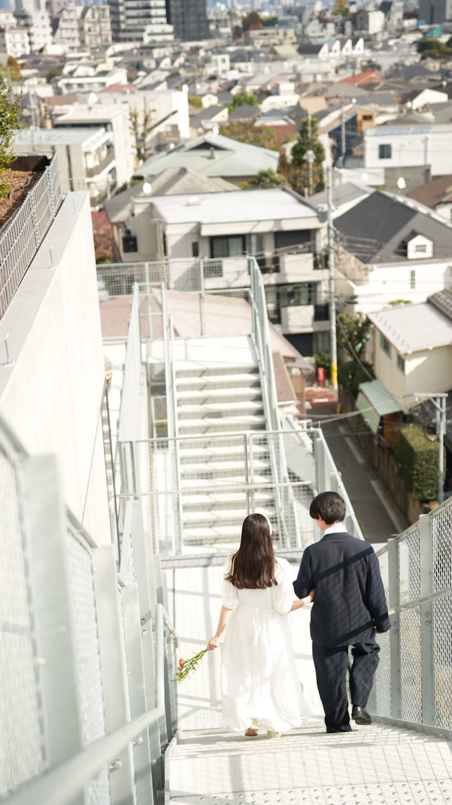
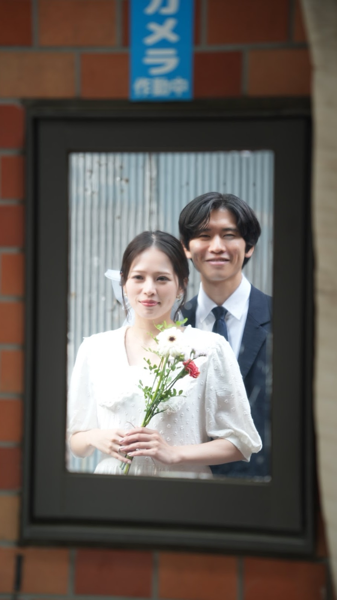
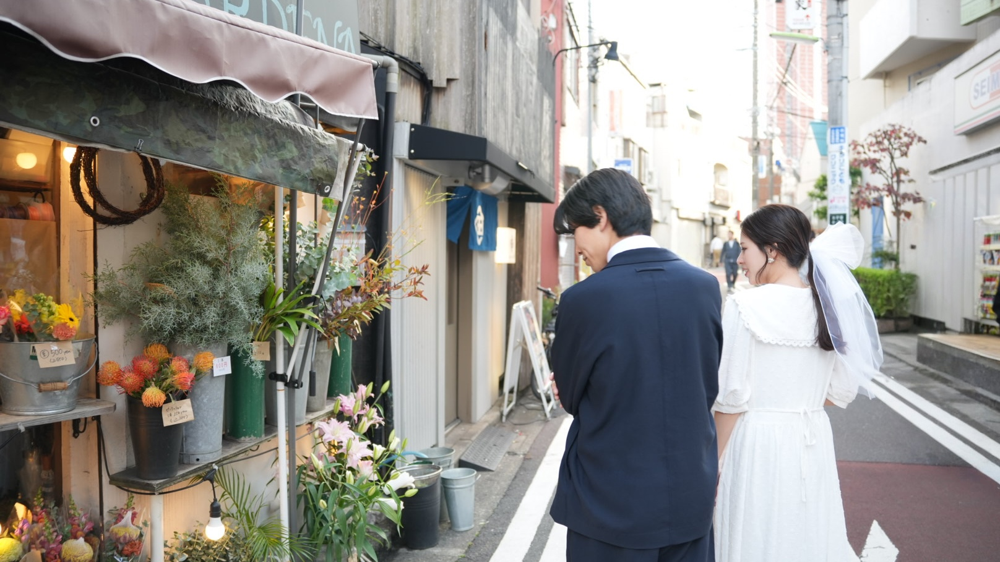
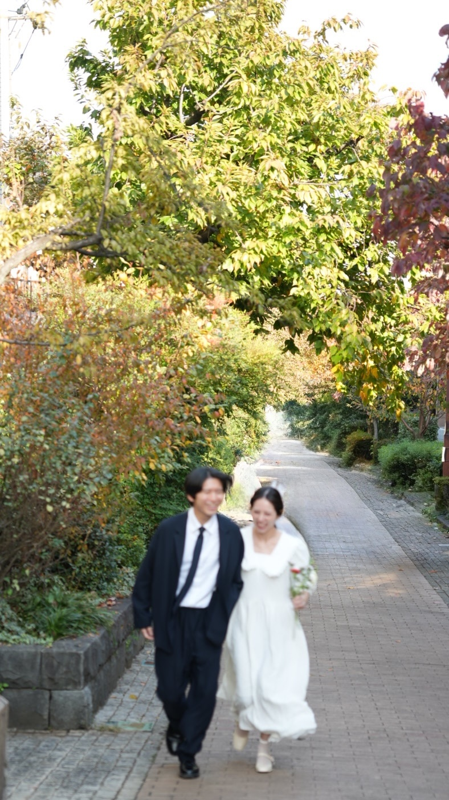
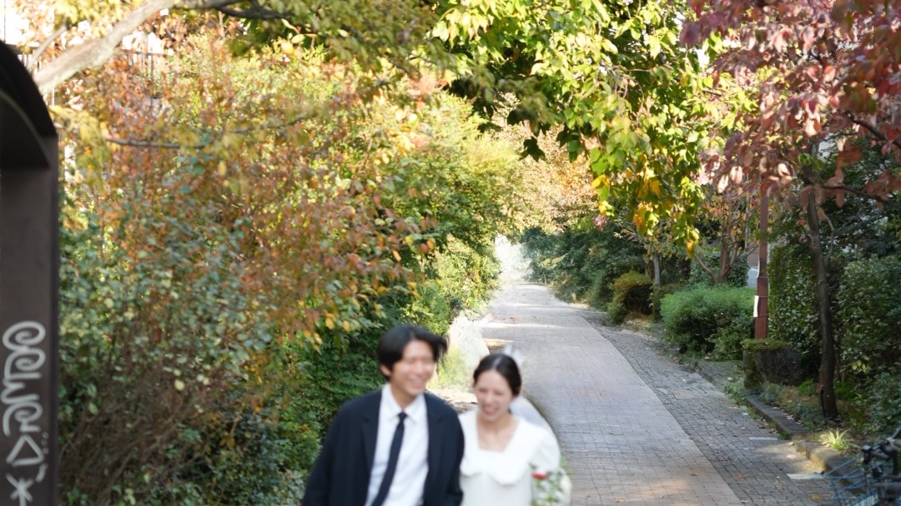

冬の訪れを感じる季節となりましたが
As we feel the arrival of winter
１２月吉日
December an auspicious day
冬の訪れを感じる季節となりましたが
皆さまお元気でお過ごしでしょうか
私たちはこのたび結婚する運びとなりました
日頃お世話になっている皆さまに
感謝の気持ちをお伝えしたく ささやかながら
結婚式を挙げることとなりました
ご多用の中 恐れ入りますが
ぜひご列席賜りますようお願い申し上げます
As we feel the arrival of winter
we hope you are doing well
We are happy to share that
we are getting married
To thank everyone who has supported us
we will be having a small wedding ceremony
We would love for you to join us
１２月吉日
名取 虎之介
内田 桃香
December an auspicious day
Toranosuke Natori
Momoka Uchida


GROOM
名取 虎之介
Toranosuke Natori
生年月日：１９９８年２月１６日
Born：February 16 1998
出身地：千葉県松戸市
From：Matsudo Chiba Japan
広告代理店に勤務
MBTIは INTP-A (論理学者)
好きな食べ物はカレー
学生時代はサッカーに打ち込む
最近はRADWIMPSのトリビュートアルバムをよく聴く
Working at an advertising agency
MBTI Type: INTP-A (Logician)
My favorite food is curry
Devoted to soccer during my school days
Lately has been listening to the RADWIMPS tribute album
MBTIは INTP-A (論理学者)
好きな食べ物はカレー
学生時代はサッカーに打ち込む
最近はRADWIMPSのトリビュートアルバムをよく聴く
Working at an advertising agency
MBTI Type: INTP-A (Logician)
My favorite food is curry
Devoted to soccer during my school days
Lately has been listening to the RADWIMPS tribute album
BRIDE
内田 桃香
Momoka Uchida
生年月日：１９９７年３月８日
Born：March 8 1997
出身地：埼玉県東松山市
From：Higashi-matsuyama Saitama Japan
建築会社に勤務
MBTIは INFJ-T (提唱者)
無類のチョコ好き
得意料理はハンバーグと餃子
邦ロックが趣味で毎年フェスに参戦 Working at an architecture company
MBTI Type: INFJ-T (Advocate)
An avid chocolate lover
My specialty dishes are hamburger steak and gyoza
Enjoys Japanese rock music and attends music festivals every year
MBTIは INFJ-T (提唱者)
無類のチョコ好き
得意料理はハンバーグと餃子
邦ロックが趣味で毎年フェスに参戦 Working at an architecture company
MBTI Type: INFJ-T (Advocate)
An avid chocolate lover
My specialty dishes are hamburger steak and gyoza
Enjoys Japanese rock music and attends music festivals every year

日時
Date and Time
２０２６年３月７日（土）
受付１２：３０
挙式１３：００
披露宴１４：００
Saturday March 7 2026
Reception12:30 PM
Ceremony01:00 PM
Wedding Banquet02:00 PM
場所
Place
〒１０６ー００４７
東京都港区南麻布５ー２ー３
東京メトロ日比谷線 広尾駅３番口より徒歩４分
電話 ０３ー５８６０ー２４１３
5-2-3 Minami-azabu Minato-ku
Tokyo 106-0047 Japan
4 minutes walk from Exit 3 of Hiroo Station
on the Tokyo Metro Hibiya Line
on the Tokyo Metro Hibiya Line

勝手ながら １月１６日（金）までに
ご出欠のお返事をいただけますと幸いです
We'd appreciate it if you could kindly reply
by January 16